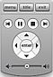

다음은 iDVD 리모컨을 사용하는 방법입니다.
■
포인터를 사용하여 화살표 단추와 리모컨의 Enter 단추를 클릭하여(아래 참조) 메뉴 내의 단추들을 선택하십시오.

■
오른쪽 및 왼쪽 화살표 단추를 사용하여 시청자가 제어하는 슬라이드쇼(자동으로 넘어가지 않는 슬라이드쇼) 또는 동영상 내의 장에 있는 슬라이드를 탐색하십시오.
■
동영상을 뒤로 이동하려면 왼쪽 화살표 단추를 누르고, 앞으로 빨리 이동하려면 오른쪽 단추를 누르십시오.
■
Menu(메뉴) 단추를 사용하면 방문한 마지막 메뉴로 돌아갑니다.
■
Title(제목) 단추를 사용하면 프로젝트의 주 메뉴로 돌아갑니다.